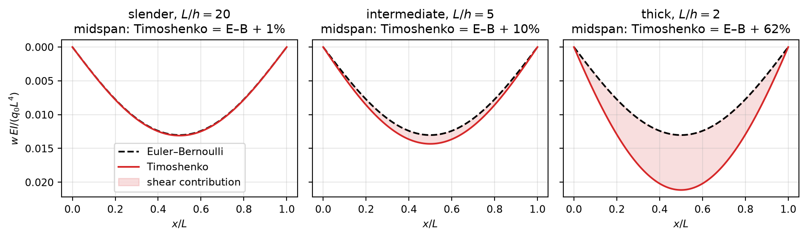

Code
import sympy as sp
import numpy as np
import matplotlib.pyplot as plt
sp.init_printing()
plt.rcParams.update({'figure.figsize': (10, 3), 'font.size': 9,
'axes.grid': True, 'grid.alpha': 0.3})September 27, 2026
Determine the deflection \(w(x)\) by using Timoshenko beam theory (assume properties of the beam \(K_sGA\), \(EI\)). The beam has length \(L\) and carries the uniform load \(q_0\).
Supports (read them off the figure before touching the equations):
| end | support | conditions |
|---|---|---|
| \(x=0\) | pin (reactions \(V\) and horizontal force, free rotation) | \(w(0)=0\), \(M(0)=0\) |
| \(x=L\) | roller (reaction \(V\) only, free rotation and \(u\)) | \(w(L)=0\), \(M(L)=0\) |
Answer:
\[w(x)=\frac{q_0}{2K_sGA}\left(-x^{2}+xL\right) +\frac{q_0}{24EI}\left(x^{4}-2Lx^{3}+L^{3}x\right)\]
Euler–Bernoulli. Plane sections remain plane and normal to the deformed axis. The rotation of the cross section is therefore not an independent unknown, it is the slope \(w'\), and the transverse shear strain vanishes:
\[\gamma_{xz}=0\]
Timoshenko. Plane sections remain plane but are not perpendicular to the deformed axis anymore. The rotation \(\varphi(x)\) and the deflection \(w(x)\) are two independent variables; the difference between them is the shear deformation of the section:
\[\gamma_{xz}\neq0\]
The difference between the two theories is significant for short, thick beams. Take a look at How important is shear?
Timoshenko theory is built on an assumed displacement field:
\[\mathbf{u}=\left[-z\,\varphi(x),\;0,\;w(x)\right]\]
which gives the two non-zero strains
\[\epsilon_{xx}=\frac{\partial u_x}{\partial x}=-z\,\varphi'(x)\]
\[\gamma_{xz}=2\epsilon_{xz}=\frac{\partial u_x}{\partial z}+\frac{\partial u_z}{\partial x} =-\varphi+w'\]
Setting \(\varphi=w'\) makes \(\gamma_{xz}=0\) and gives back Euler–Bernoulli.
Internal virtual work, with \(\delta\epsilon_{xx}=-z\,\delta\varphi'\) and \(\delta\gamma_{xz}=\delta w'-\delta\varphi\):
\[\delta W_\text{int}=\int_\Omega\sigma_{ij}\,\delta\epsilon_{ij}\,d\Omega =\int_0^L\!\!\int_A\left(\sigma_{xx}\,\delta\epsilon_{xx}+\sigma_{xz}\,\delta\gamma_{xz}\right)dA\,dx\]
\[\delta W_\text{int}=\int_0^L\left[M\left(-\delta\varphi'\right) +V\left(\delta w'-\delta\varphi\right)\right]dx\]
with the section forces
\[M=\int_A\sigma_{xx}\,z\,dA,\qquad V=\int_A\sigma_{xz}\,dA\]
External virtual work of the distributed load:
\[\delta W_\text{ext}=\int_0^L q(x)\,\delta w\,dx\]
and equilibrium is
\[\delta W_\text{int}=\delta W_\text{ext}\]
Assuming linear elasticity:
\[M=\int_A\sigma_{xx}\,z\,dA=\int_A E\left(-z\varphi'\right)z\,dA=-EI\,\varphi'\]
\[V=K_s\int_A\sigma_{xz}\,dA=K_s\int_A G\left(w'-\varphi\right)dA=K_sGA\left(w'-\varphi\right)\]
The shear correction factor \(K_s\) is needed because the real \(\sigma_{xz}\) is not constant over the section (it is parabolic for a rectangle), while the kinematics above give a constant \(\gamma_{xz}\).
Integrating \(\delta W_\text{int}=\delta W_\text{ext}\) by parts, and requiring it to hold for every \(\delta\varphi\) and \(\delta w\), we find:
\[\left\{\begin{array}{l} -V+M'=0\\[2pt] V'+q=0 \end{array}\right.\]
Inserting the constitutive relations gives the equilibrium equations for the Timoshenko beam:
\[\left\{\begin{array}{l} K_sGA\left(\varphi-w'\right)-EI\,\varphi''=0\\[2pt] K_sGA\left(w''-\varphi'\right)+q=0 \end{array}\right.\]
From these we find the two equations that are actually used to solve problems:
\[EI\,\varphi'''=q\qquad ①\]
\[w'=-\frac{EI}{K_sGA}\,\varphi''+\varphi\qquad ②\]
The first equilibrium equation is \(V=M'=-EI\varphi''\). Then:
To solve we need to integrate. With \(q=q_0\) constant:
\[EI\,\varphi'''=q_0\;\Longrightarrow\;\int EI\frac{d^{3}\varphi}{dx^{3}}\,dx=\int q_0\,dx\]
\[\frac{d^{2}\varphi}{dx^{2}}=\frac{q_0}{EI}\,x+C_1\]
\[\frac{d\varphi}{dx}=\frac{q_0}{EI}\frac{x^{2}}{2}+C_1x+C_2\]
\[\varphi(x)=\frac{q_0}{EI}\frac{x^{3}}{6}+C_1\frac{x^{2}}{2}+C_2x+C_3\qquad ③\]
We need to apply the BCs to solve:
| left | right |
|---|---|
| \(w(0)=0\) | \(w(L)=0\) |
| \(M(0)=0\) | \(M(L)=0\) |
The moment conditions only involve \(\varphi\), so we use them first. Since \(M=\int_A\sigma_{xx}z\,dA=-EI\varphi'\):
\[M(0)=0\;\Longrightarrow\;\varphi'(0)=0 \;\Longrightarrow\;\frac{q_0}{EI}\frac{0}{2}+C_1\cdot0+C_2=0\]
\[\Longrightarrow\quad C_2=0\qquad ④\]
\[M(L)=0\;\Longrightarrow\;\varphi'(L)=0 \;\Longrightarrow\;\frac{q_0}{EI}\frac{L^{2}}{2}+C_1L+\underbrace{C_2}_{=0}=0\]
\[\Longrightarrow\quad C_1=-\frac{q_0L}{2EI}\qquad ⑤\]
\[\int w'\,dx=w=-\frac{EI}{K_sGA}\int\varphi''\,dx+\int\varphi\,dx\]
\[w(x)=-\frac{EI}{K_sGA}\left(\frac{q_0x^{2}}{2EI}+C_1x\right) +\frac{q_0}{EI}\frac{x^{4}}{24}+C_1\frac{x^{3}}{6}+C_3x+C_4\qquad ⑥\]
Note that \(\int\varphi''\,dx=\varphi'\) was written using ④ (\(C_2=0\)), and its integration constant is absorbed into \(C_4\).
\[w(0)=0\;\Longrightarrow\;C_4=0\qquad ⑦\]
\[w(L)=0\]
The shear term in ⑥, with ⑤, is \(-\dfrac{1}{K_sGA}\left(\dfrac{q_0x^{2}}{2}-\dfrac{q_0Lx}{2}\right)\), which vanishes at \(x=L\). What is left is
\[\frac{q_0L^{4}}{24EI}-\frac{q_0L}{2EI}\frac{L^{3}}{6}+C_3L=0 \;\Longrightarrow\;\frac{q_0L^{4}}{24EI}-\frac{2q_0L^{4}}{24EI}+C_3L=0\]
\[\Longrightarrow\quad C_3=\frac{q_0L^{3}}{24EI}\qquad ⑧\]
Replacing ④, ⑤, ⑦ and ⑧ in ⑥:
\[w(x)=\frac{q_0}{2K_sGA}\left(-x^{2}+Lx\right) +\frac{q_0}{24EI}\left(x^{4}-2Lx^{3}+L^{3}x\right)\]
The second term is exactly the Euler–Bernoulli deflection of a simply supported beam; the first term is the extra deflection due to shear, and it disappears for \(K_sGA\to\infty\) (shear-rigid beam).
The script follows the same steps: integrate ① three times, impose the moment BCs, then integrate ② and impose the deflection BCs.
# --- 1. Integrate EI phi''' = q0 ----------------------------------------------
x, L, EI, KGA, q0 = sp.symbols('x L EI K_sGA q_0', positive=True)
C1, C2, C3, C4 = sp.symbols('C1:5')
phi_pp = q0/EI*x + C1 # phi''
phi_p = sp.integrate(phi_pp, x) + C2 # phi'
phi = sp.integrate(phi_p, x) + C3 # phi, eq. ③
phi\(\displaystyle \frac{C_{1} x^{2}}{2} + C_{2} x + C_{3} + \frac{q_{0} x^{3}}{6 EI}\)
\(\displaystyle \left\{ C_{1} : - \frac{L q_{0}}{2 EI}, \ C_{2} : 0\right\}\)
# --- 3. Integrate w' = -EI/(KsGA) phi'' + phi ---------------------------------
w = -EI/KGA*phi_p + sp.integrate(phi, x) + C4 # eq. ⑥
w = w.subs(sol_M)
# --- 4. Deflection BCs: w(0) = w(L) = 0 ----------------------------------------
sol_w = sp.solve([w.subs(x, 0), w.subs(x, L)], [C3, C4], dict=True)[0]
sol_w\(\displaystyle \left\{ C_{3} : \frac{L^{3} q_{0}}{24 EI}, \ C_{4} : 0\right\}\)
\(\displaystyle \frac{L q_{0} x}{2 K_{sGA}} - \frac{q_{0} x^{2}}{2 K_{sGA}} + \frac{L^{3} q_{0} x}{24 EI} - \frac{L q_{0} x^{3}}{12 EI} + \frac{q_{0} x^{4}}{24 EI}\)
At midspan the two contributions are
\[w\!\left(\tfrac{L}{2}\right)=\underbrace{\frac{q_0L^{2}}{8K_sGA}}_{\text{shear}} +\underbrace{\frac{5q_0L^{4}}{384EI}}_{\text{bending (E–B)}} =\frac{5q_0L^{4}}{384EI}\left(1+\frac{48}{5}\frac{EI}{K_sGAL^{2}}\right)\]
For a rectangular section (\(I=bh^{3}/12\), \(A=bh\), \(K_s=5/6\)) with \(\nu=0.3\) (\(E/G=2(1+\nu)=2.6\)):
\[\frac{EI}{K_sGAL^{2}}=\frac{E}{G}\,\frac{h^{2}}{12K_sL^{2}}=0.26\left(\frac{h}{L}\right)^{2}\]
so the shear correction is \(\approx 2.5\,(h/L)^{2}\): about \(2.5\%\) for \(L/h=10\), but \(62\%\) for \(L/h=2\).
# --- plot (normalised) ---------------------------------------------------------
nu, Ks = 0.3, 5/6
xi = np.linspace(0, 1, 400)
def w_n(xi, L_h):
"""w*EI/(q0*L^4) for a rectangular section with length-to-height ratio L/h."""
s = 2*(1 + nu)/(12*Ks)/L_h**2 # EI/(KsGA L^2)
return s/2*(-xi**2 + xi) + (xi**4 - 2*xi**3 + xi)/24
w_EB = w_n(xi, np.inf) # Euler–Bernoulli: no shear term
cases = [(20, 'slender'), (5, 'intermediate'), (2, 'thick')]
fig, ax = plt.subplots(1, 3, sharey=True)
for a, (L_h, name) in zip(ax, cases):
w_T = w_n(xi, L_h)
a.plot(xi, w_EB, 'k--', label='Euler–Bernoulli')
a.plot(xi, w_T, 'C3', label='Timoshenko')
a.fill_between(xi, w_EB, w_T, color='C3', alpha=0.15, label='shear contribution')
diff = (w_n(0.5, L_h)/w_n(0.5, np.inf) - 1)*100
a.set_title(f'{name}, $L/h={L_h}$\nmidspan: Timoshenko = E–B + {diff:.0f}%')
a.set_xlabel('$x/L$')
ax[0].invert_yaxis() # deflection drawn downwards, as the load
ax[0].set_ylabel(r'$w\,EI/(q_0L^4)$')
ax[0].legend(loc='lower center')
plt.tight_layout(); plt.show()